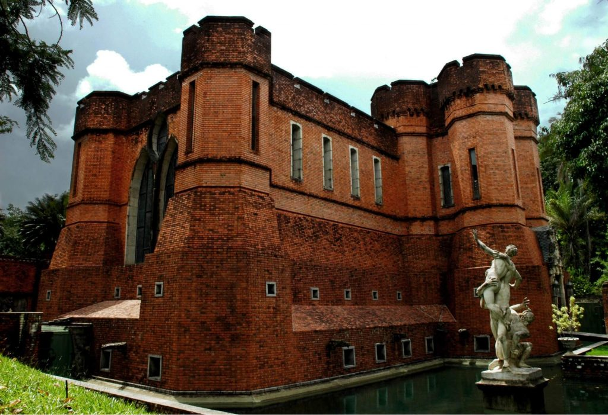
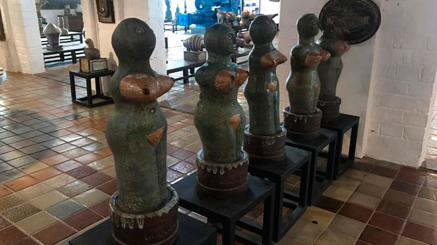
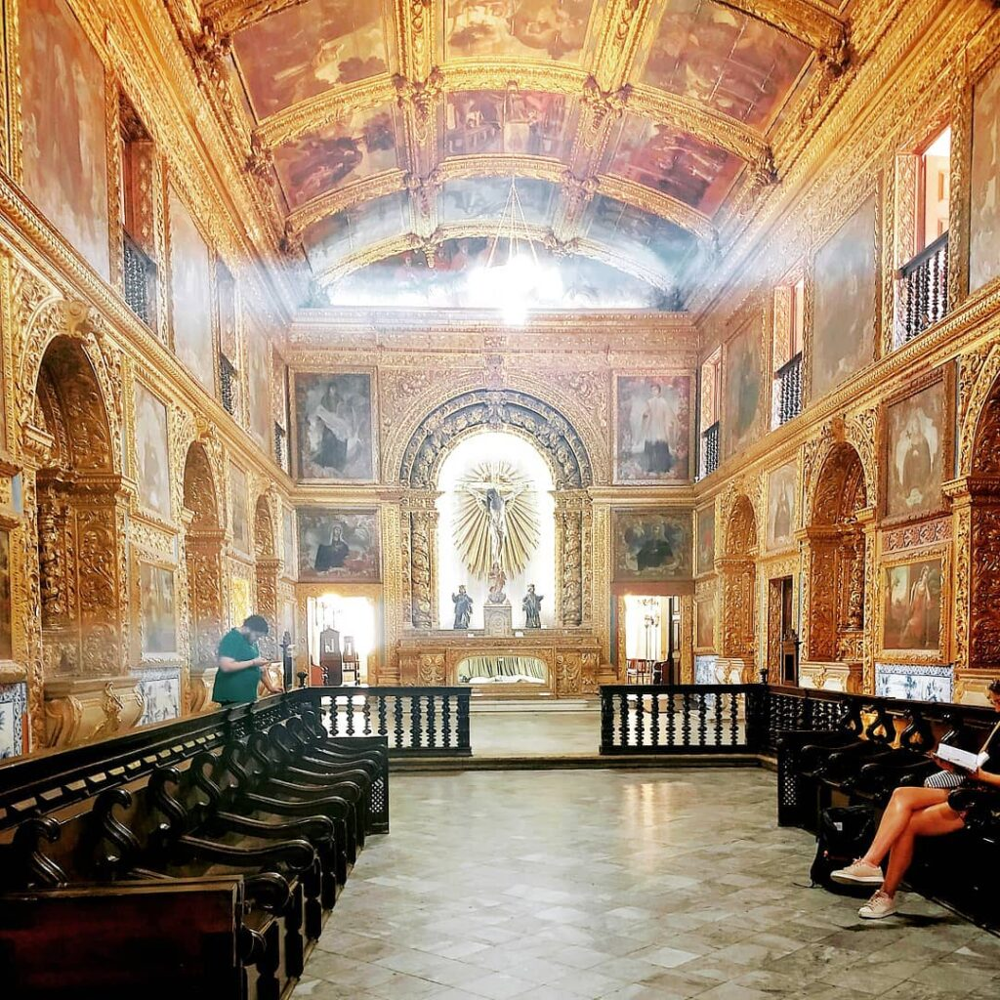
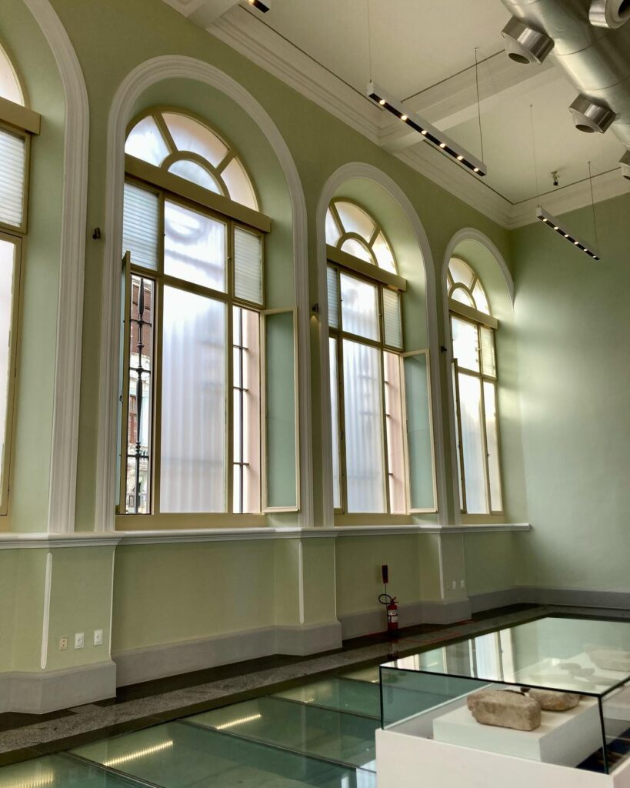
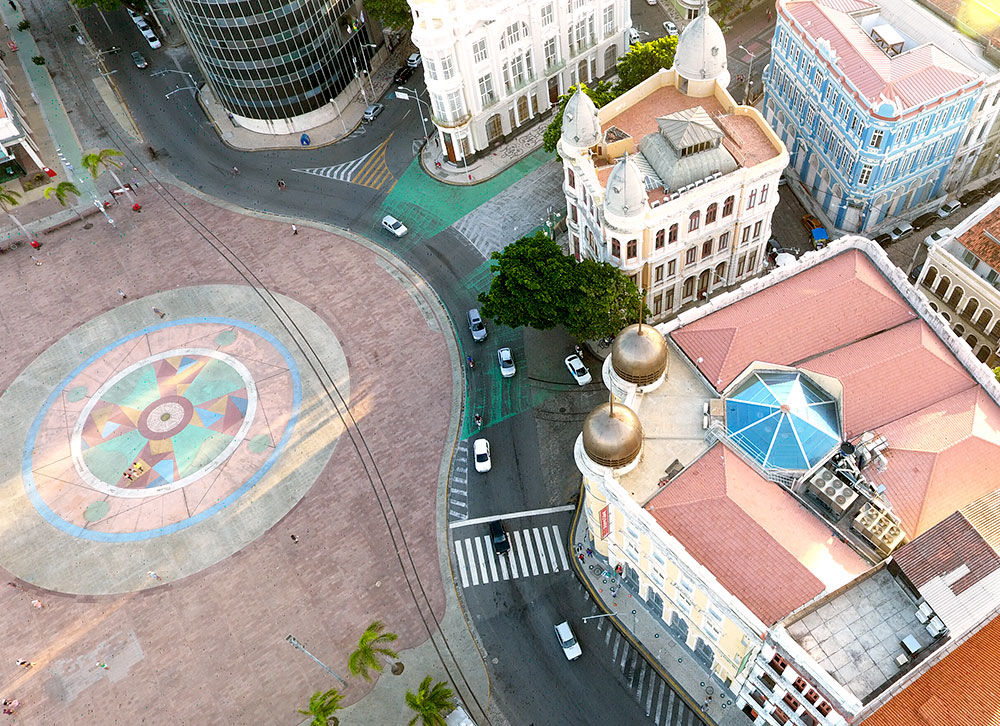
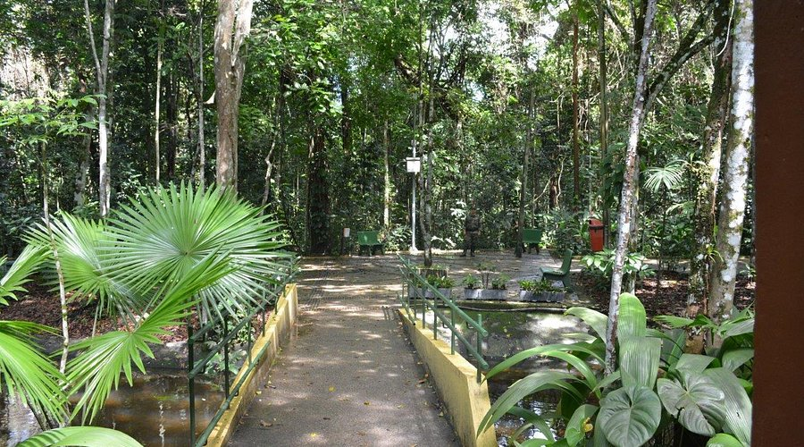
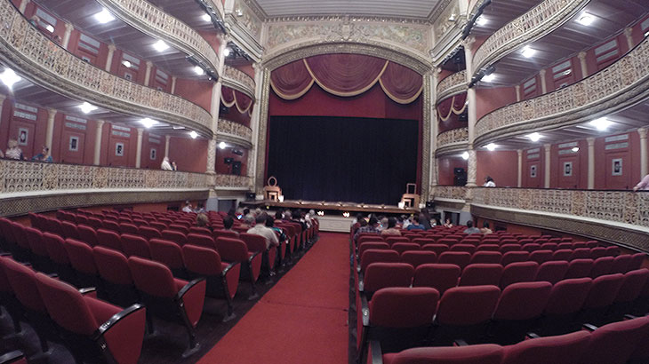

Pontos Turisticos de Recife
- Instituto Ricardo Breannand
- Oficina Cerâmica Francisco Brennand
- Capela Dourada
- Caixa Cultural
- Praça do Marco Zero
- Jardim Botânico do Recife
- Teatro Santa Isabel
Instituto Ricardo Breannand
Localizado em uma extensa área verde, o Instituto Ricardo Brennand é um verdadeiro tesouro cultural. Com mais de 3.000 peças de armas brancas e uma coleção de objetos artísticos e históricos, é uma parada obrigatória para os amantes da história e da arte.
Oficina Cerâmica Francisco Brennand
Explorando a origem da vida e a eternidade das coisas, a Oficina Cerâmica Francisco Brennand encanta com seus milhares de obras, esculturas e peças de cerâmica. Um verdadeiro complexo artístico que inspira e impressiona.
Capela Dourada
Rica em história e beleza, a Capela Dourada é um destaque do complexo do Convento e Igreja de Santo Antônio. Seus detalhes em ouro e os magníficos painéis pintados a óleo atraem visitantes de todo o mundo.
Caixa Cultural
Com uma programação diversificada e acessível, a Caixa Cultural é um espaço dedicado à arte e cultura. Proporcionando experiências enriquecedoras, é um ponto de encontro para os amantes das artes.
Praça do Marco Zero
Marcando o início da contagem das distâncias rodoviárias do Brasil, a Praça do Marco Zero é um ponto de encontro para eventos culturais e celebrações. Com uma vista deslumbrante e uma atmosfera vibrante, é um destino imperdível na cidade.
Jardim Botânico do Recife
O Jardim Botânico do Recife é um verdadeiro oásis verde no coração da cidade, oferecendo uma experiência única de imersão na natureza para moradores e visitantes. Localizado no bairro de São José, este santuário botânico é um refúgio tranquilo e inspirador, onde se pode escapar da agitação urbana e se reconectar com a beleza natural. Fundado em 1963, o Jardim Botânico do Recife ocupa uma área de aproximadamente 11 hectares e abriga uma impressionante diversidade de plantas nativas e exóticas. Seus jardins cuidadosamente planejados exibem uma coleção magnífica de espécies vegetais, incluindo árvores frutíferas, plantas ornamentais, ervas medicinais e uma variedade de flores coloridas que encantam os sentidos em todas as estações do ano.
Teatro Santa Isabel
Nomeado em homenagem à Princesa Isabel, o Teatro Santa Isabel é um ícone arquitetônico que remonta ao século XIX. Com visitas guiadas gratuitas aos domingos, é uma oportunidade única para explorar sua história e beleza.
